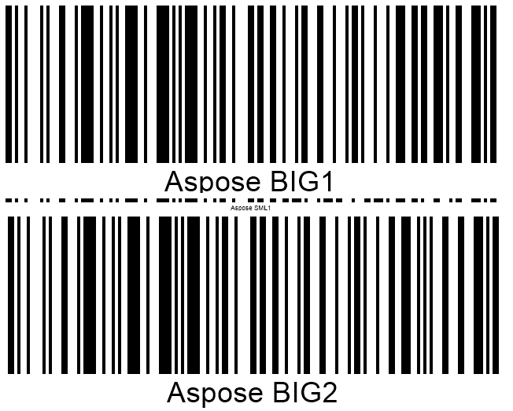

Recognition Quality Options and Presets
Overview
Barcode reading relies on machine vision mechanisms and uses various mathematical algorithms for object detection. Same as in other computer vision tasks, source image quality is crucial to convert an arbitrary image to machine-readable code. Low-quality barcode images may result being unreadable depending on specific recognition standards. There are different approaches to read barcodes of unacceptable quality. However, running such methods takes extra CPU computation time and may lead to the considerable increase in recognition time.
Aspose.BarCode for Cloud suggests optimizing the recognition process in terms of quality and speed in line with specific business needs. A special class called QualitySettings provides flexible recognition settings to achieve the acceptable trade-off between reading acuracy and speed depending the quality of a source barcode image.
Recognition Speed and Quality Options and Presets
As stated above, Aspose.BarCode for Cloud contains class QualitySettings that is used to enable and disable various algorithms to read barcodes with damages or artifacts. See the article Recognition Specificities for additional information about special recognition cases. In addition, class QualitySettings allows customizing the trade-off between recognition quality and speed in common cases. Corresponding methods are grouped into dedicated presets that allow improving image recovery and barcode reading for various scenarios.
Recognition Presets
In this section, supported recognition presets are described, including HighPerformance, NormalQuality, HighQuality, MaxBarCodes, and others, as represented in the table below. By default, the NormalQuality preset is applied.
| Recognition Preset | Description |
|---|---|
| NormalQuality | Suitable for regular-quality barcode images |
| HighQuality | Intended for low-quality barcode images. It allows scanning diagonal and severely damaged barcode images |
| HighPerformance | Used for high-quality barcode images |
| HighQualityDetection | Same as NormalQuality but with the setDetectorSettings method called passing the HighQuality value |
| MaxQualityDetection | Same as NormalQuality but with the setDetectorSettings method called using the MaxQuality value. It allows detecting diagonal and damaged barcode images |
| MaxBarcodes | Allows scanning all barcodes possibly presented in an image, including invalid ones. It is recommended for debugging tasks only |
Universal Presets for All Barcode Types
Aspose.BarCode for Cloud suggests various universal recognition presets and corresponding methods to activate them, such as setHighPerformance, setNormalQuality, and setHighQuality. These presets establish linear dependence between reading accuracy and speed for all barcode types. Generally, using the default NormalQuality preset is sufficient for most of barcodes that have acceptable scanning quality.

Presets for 1D Barcode Types
To scan linear barcodes, Aspose.BarCode for Cloud allows using dedicated recognition presets suitable for normal-quality barcodes. These presets provide improved methods for 1D barcode detection and decoding and are useful to work with barcodes of small dimensions or complex documents with multiple text blocks and tables. For example, compared with general recognition settings, HighQualityDetection and MaxQualityDetection presets allow improving recognition results for 1D barcodes in complex documents. Alternatilvely, such improvement can be implemented using the NormalQuality preset and tuning BarcodeSvmDetectorSettings through the setDetectorSettings method.
The image shown below is a sample document with multiple barcodes that contains also text parts and figures.

Using MaxBarCodes Preset for Debugging
To detect all possible barcodes in an image including invalid ones, Aspose.BarCode for Cloud contains a special preset called MaxBarCodes. This preset allows restoring up to 1% more barcodes (severely damaged or incorrectly generated) in comparison with the results that can be reached by the NormalQuality preset. Similar reading settings can be implemented through the setAllowIncorrectBarcodes method. The MaxBarCodes preset may be used to scan even unreadable barcodes; however, it is intended for debugging tasks only as it may result in considerably augmenting the time needed to complete the reading process and providing invalid decoding outputs. This preset is suggested only for advanced users of the Aspose.BarCode library.
Recognition Options
Fast Detection for High-Quality Barcode Images
To recognize high-quality 1D barcodes created through web-based applications, it is suggested to use setAllowOneDFastBarcodesDetector and setFastScanOnly reading methods. These methods enable fast scanning of target image areas through lightweight scanning techniques. The difference between these two options is that the setFastScanOnly method does not enable further barcode search after the failure to idetify more barcodes through lightweight scanning methods.

Regular Recognition of Barcode Images without Damage
To decode regular norma-quality barcode images, Aspose.BarCode for Cloud applies a method called setAllowRegularImage that uses standard recognition techniques. This mode is suggested to be enabled in most cases, as its deactivation may lead to decoding failures for regular barcode images.

Detection of Areas with Potential Barcodes
To read barcodes, Aspose.BarCode for Cloud first performs the segmentation of a source image and finds areas with potential barcodes. Two barcode region detectors are available: the one with flexible sensitivity implemented in a class called BarcodeSvmDetectorSettings and the other one that relies on the previous detector version that allows correctly identifying about 97% of barcodes without the need in additional settings. BarcodeSvmDetectorSettings is used by default together with calling the setNormalQuality method.
Barcode Detector with Flexible Sensibility
BarcodeSvmDetectorSettings allows adjusting the sensitivity of the barcode detector in a flexible manner according to specific needs. The better is the detector sensitivity, the lower is reading speed and the better are the results of barcode region detection in complex source images with many text blocks and tables. For 1D barcodes, BarcodeSvmDetectorSettings supports the following sensitivity settings:
- NormalQuality
- HighQuality
- HighPerformance
- MaxQuality
Previous Version of Barcode Detector
The setUseOldBarcodeDetector method allows performing barcode region detection for 1D barcodes using the previous detector version that does not support flexible sensitivity settings. This region detection mode is close to NormalQuality and HighQuality modes of the new detector implemented in BarcodeSvmDetectorSettings.
Managing Scan Gap during 1D and 2D Barcode Scanning
To conduct preliminary detection of large-sized 1D and some 2D types, such as QR Code, PDF417, or Aztec Code, barcode scanning can be applied with a gap of several lines. This option is intended to avoid unaccaptably long scanning and allows speeding up the decoding process. Aspose.BarCode for Cloud supports a special method called setAllowDetectScanGap to enable the scan gap. However, if large-sized and tiny barcodes are displayed in an image close to each other, applying this recognition option can lead to a failure to read smaller-sized barcode. When this option is not enabled, reading such combinations of barcodes can be executed successfully at the expense of recognition speed.
